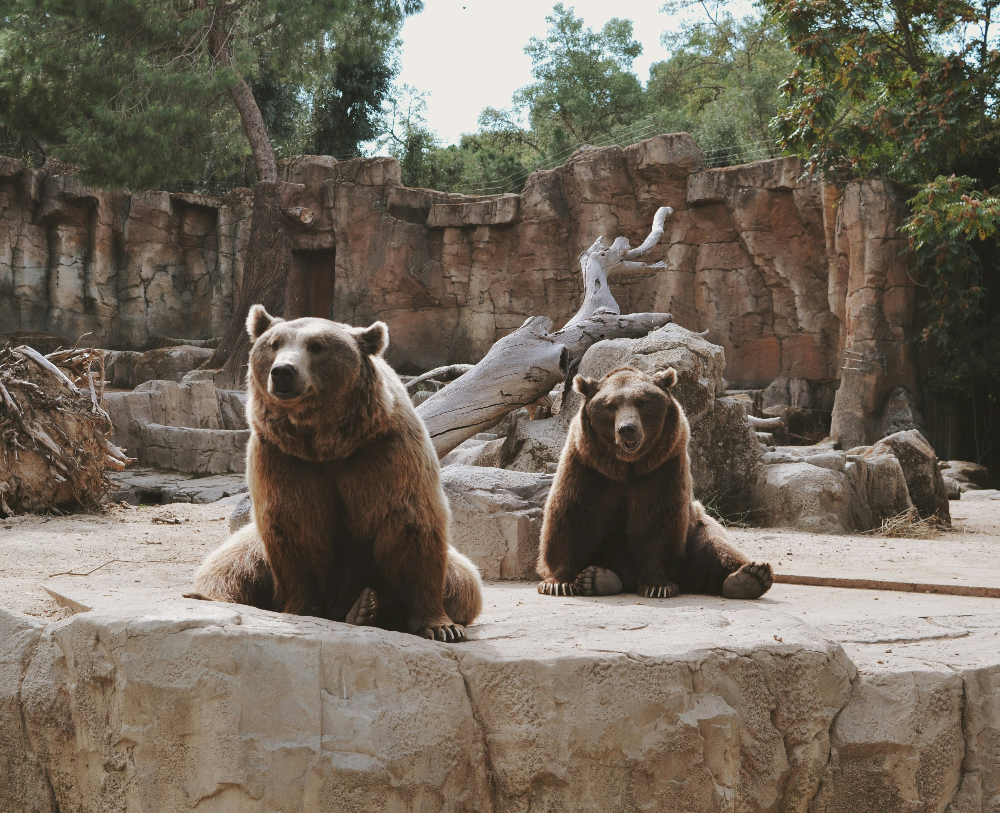
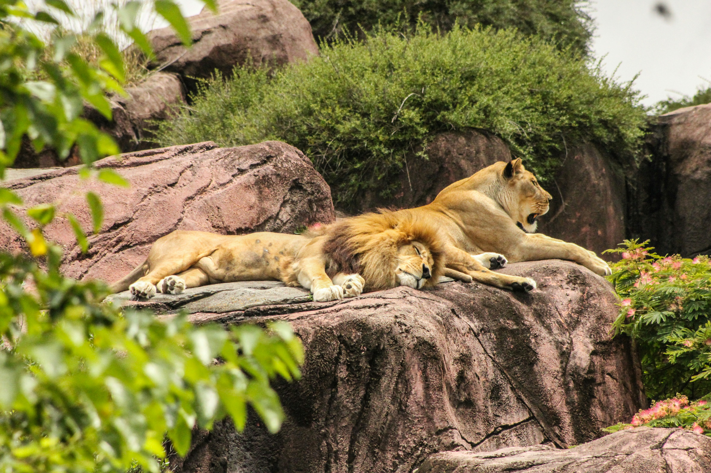
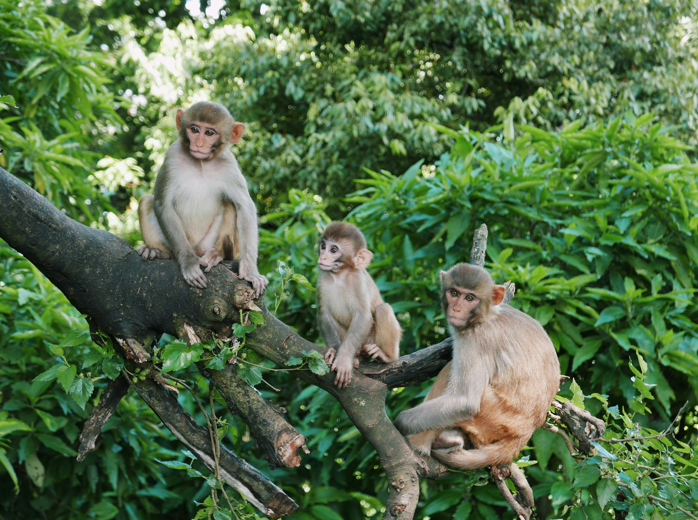
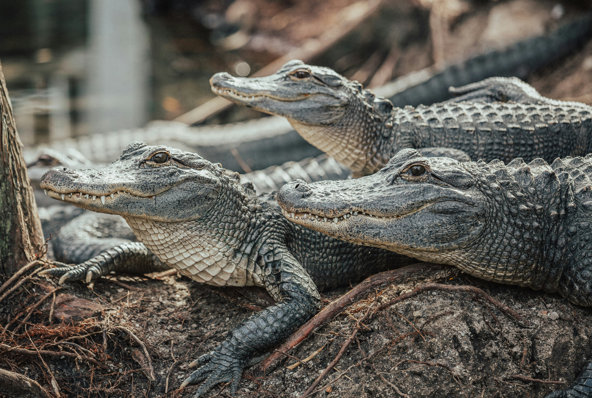

BEARS
- Ollie
- Mona
Bears, a small group of mostly large omnivorous mammals, can be found all over the world. They live in forests, mountains, tundra, deserts, and grassy areas. Though there are different types of bear, all bear species have similarities. They all have stocky, fur-covered bodies, short legs, and a round head with a long snout. There are eight species of bear: American black bear, Asiatic black bear, brown bear, giant panda bear, polar bear, spectacled bear, sloth bear and sun bear.
GIRAFFES
.jpg)
- Frankie
- Coconut
Giraffes, (genus Giraffa) are long-necked, cud-chewing, hoofed mammals of Africa, with long legs and a coat pattern of irregular brown patches on a light background. Giraffes are the tallest of all land animals. Using prehensile tongues almost half a metre long, they are able to browse foliage almost six metres from the ground.
LIONS
- Mella
- Karl
Lion, (Panthera leo), is a large, powerfully built cat that is second in size only to the tiger. They are most active at night and live in a variety of habitats but prefer grassland, savanna, dense scrub, and open woodland. Historically, they ranged across much of Europe, Asia, and Africa, but now they are found mainly in parts of Africa south of the Sahara.
MONKEYS
- Cookie
- Earl
- Banana Pudding
Monkeys are a large and diverse mammal group that includes most primates. Humans, chimpanzees, and other apes share an ancestor with monkeys but belong to a separate group of primates that diverged from monkeys millions of years ago. Monkeys are typically smaller than apes and usually have tails, which apes lack
ALLIGATORS
- Wren
- Aspen
- Mika
American alligators are large crocodilians found only in the United States. They can grow to be more than 12 feet (3.6 meters) in length and weigh as much as 1,000 pounds (450 kilograms), with males being slightly larger than females on average. The animal's dark skin is armored with small, bony scales called scutes.